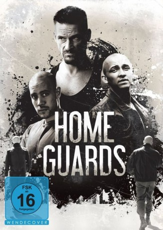

#11107 Home Guards
 
 IMDB-Wertung: 6.4 / 10
IMDB-Wertung: 6.4 / 10  Metascore: 0
Metascore: 0 
Máté (Attila Ifj. Vidnyánszky) hofft auf eine Karriere als Sportler, während Joci (Viktor Klem) kein besonderes Ziel in seinem Leben zu verfolgen scheint. Die beiden sind Brüder und könnten nicht verschiedener sein. Eines Tages treten sie einer neuen Sicherheitstruppe bei, welche die kriminellen Aktivitäten in der Stadt eindämmen will. Doch das eigentlich noble Ziel gerät bald in den Hintergrund: Erst werden militante Züge innerhalb der Gruppe sichtbar, dann breitet sich zwischen den Mitgliedern eine Naziideologie aus und schließlich rechtfertigt die Organisation ihren Sicherheitsauftrag mit Gewalt. Dabei schrecken sie nicht einmal mehr vor Totschlag und Mord zurück. Die Brüder finden sich an einem Scheideweg wieder und müssen schließlich eine Entscheidung für oder gegen dieses hasserfüllte und blutige Leben fällen...
Jahr: 2015
Dauer: 110 Minuten
FSK: 16
Land: Ungarn Studio: Alive Vertrieb und MarketingTonspuren:
Untertitel:
Auflösung: 1080p (1920x808) Größe: 4382 MB
Genre: Drama
Regisseur: Krisztina Goda
Drehbuch: Réka Divinyi
Soundtrack: Márk Moldvai
Darsteller:
 Iván Fenyö als János Ács
Iván Fenyö als János Ács- Franciska Töröcsik als Anita Lukács
- Piroska Molnár als Auntie Márta
- Attila Ifj. Vidnyánszky als Máté
- Viktor Klem als Joci
- Ádám Béli als Feri
- Attila Fritz als Pacó
- Bálint Bán als Hipó
- Oszkár Nyári als Tibor Lukács
- Anna Györgyi als Erzsébet, Mrs. Sas
- Éva Bata als Veca
- Ersan David Helvaci als Oszi
- Imre Csuja als Rétváry
- Péter Barbinek als Sándor Mikátsi
- István Karsai als Sándor Korpási
- Gábor Nagypál als Csiba
- Róbert Moczó als Robi
- Attila Moczó als Gyuszi
- Tamás Borovics als Vlado
- Antal Czapkó als Athos
- György Bajomi Nagy als Darvas
- Kálmán Varju als Mohácsi
- Sándor Terhes als Gábor Madaras
- Anna Udvarias als Secretary
- Gyula Zalányi als Béla Sas
- László Szili als Telepi férfi
- Dávid Csányi als Janó
- Gyula Horváth als Janó's friend
- Fanni Gárdonyi als Girl 1
- Fruzsina Görgényi als Girl 2
- Mari Nagy als Seller at market
- Bálint Adorjáni als Announcer
- Zoltán Újvári als Politician
- Helga Mandel als Rétváry's wife
- Tamás Szegedi als Thief 1
- Péter Janicsek als Thief 2
- Gergõ Mikola als Car thief
- Bálint Gundy-Tóth als Policeman 1
- János Botai als Policeman 2
- Kristóf Horváth als Guy at market 1
- Sándor Farkas als Guy at market 2
- Ferenc Antal als Team member
- Gergely Bárány als Team member
- Dávid Béky als Team member
- Gábor Faludi als Team member
- Marcell Fazekas als Team member
- Balázs Fekete als Team member
- Bence Gelányi als Team member
- Frigyes Nándor Hum als Team member
- Barnabás Janka als Team member
Datei: X:\2015(G-M)\Home Guards (2015, FSK16, 1920x808).mkv seit 24.04.2019
Festplatte: HD 2015(A-Z)
 Es gibt insgesamt 129 Filme in der Gruppe '2015(G-M)'
Es gibt insgesamt 129 Filme in der Gruppe '2015(G-M)'